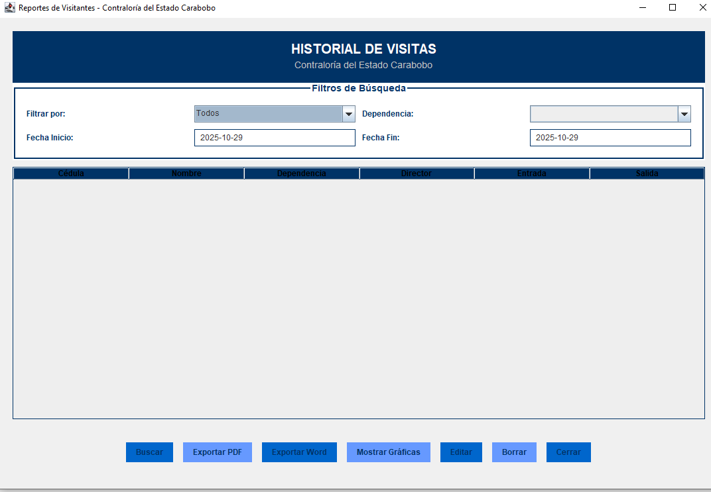

¿Qué es el Sistema?
El Sistema de Control de Visitantes (SCV) es una aplicación de escritorio diseñada para la Contraloría del Estado Carabobo, cuyo objetivo principal es digitalizar y optimizar la gestión del flujo de personas que ingresan y salen de las instalaciones.
Desarrollado en NetBeans (Java) y vinculado a una base de datos MySQL gestionada mediante phpMyAdmin, el sistema centraliza la información de acceso, reemplazando los registros manuales en papel.
Sus funcionalidades clave incluyen:
- Gestión CRUD: Permite el registro rápido y la actualización de los datos personales de los visitantes.
- Control de Acceso: Registra la hora de entrada, la oficina de destino y la hora de salida de cada persona.
- Generación de Historiales: Facilita la consulta de registros históricos de visitas.
¿Por qué se Realizó? (Objetivos y Necesidad)

- Necesidad de Seguridad y Trazabilidad: Los registros en papel dificultaban la identificación rápida de quién estaba dentro de las instalaciones en un momento dado, representando un riesgo de seguridad.
- Optimización de Procesos: Eliminar el uso de libros y planillas manuales redujo los tiempos de espera en la entrada y minimizó los errores humanos.
- Auditoría y Reporte: Se buscaba la capacidad de generar de manera instantánea y precisa un historial de visitas por oficina.
¿Cómo se Implementó? (Metodología Técnica)
La implementación se centró en la creación de una arquitectura robusta:
- Fase de Análisis: Elicitación de requerimientos con el personal de seguridad.
- Desarrollo de Software: Uso de NetBeans y Java para la interfaz gráfica (GUI).
- Gestión de Base de Datos: Diseño relacional en MySQL gestionado vía phpMyAdmin.
- Conexión y Pruebas: Implementación de JDBC y pruebas funcionales.
Conclusión
El Sistema de Control de Visitantes fue implementado con éxito, logrando un impacto inmediato al transformar un proceso manual y propenso a errores en una operación digital, rápida y auditable.